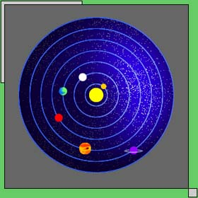

3.01. Copernicus as the constructor of a model of the Universe
The question of what the Universe looks like when observed from a planet has excited human minds for a long time. Cicero (10-3 B.C.) in his Republic describes "Scipio's dream" (Somnium Scipionis) where, according to the general beliefs of that epoch, the Universe seen from other planets was completely different than when seen from the terrestrial perspective. Nicolaus Copernicus (1473-1543), however, provided an answer completely contradicting the ancient outlook. He came to the opinion that the Universe seen from any planet would look much the same as when seen from the Earth. He considered the Earth to be just one of the planets.
In historical and astronomical books, Copernicus is often presented as a founder of a new model of the Universe. This is correct in that he did construct such a model. The Sun was at the center; our Earth and other planets circled it, moving along epicycles and deferenses. This is called the Copernican Model of the Universe (or of the world). And this Copernican, heliocentric model with circular deferenses and epicycles orbiting around the Sun (not around the Earth as with Ptolemaic), was, as early as about a hundred years later, replaced by Kepler's model with elliptical orbits. Of course, a scientific idea which survives for a century is certainly of historical importance. But the actual value of Copernicus' discovery did not consist merely in constructing a model of the Universe.
Sometimes Copernicus is honored as having substituted the old geocentric system with the new, heliocentric one, as having regarded the Sun, instead of the Earth, as the unmoving center of the Universe. This view, while quite correct, does not render the actual significance of Copernicus's work. Giordano Bruno, born five years after Copernicus' death, proclaimed that other stars are other suns with their own planetary systems. Thus the Sun was no longer the center of the Universe. As it has been known for several centuries, the Sun is not stationary; it does move in relation to the neighboring stars at a velocity of 20 kilometers per second towards the Hercules constellation and, furthermore, along with the neighboring stars, it circles the galactic center at a velocity of about 250 kilometers per second. Besides, it is suspected that, together with the Galaxy, the Sun circles our Supergalaxy (sometimes called Local Supercluster) at a velocity of several hundred kilometers per second. Thus, in that respect, the work of Copernicus is of important historical value, but only historical.
3.02. The Copernican Cosmological Principle
In fact, Copernicus accomplished something more. His model of the Universe, his opinions about positions of various celestial bodies in the Cosmos, in fact, all his work involved a new cosmological principle originated by him. It is today called the Genuine Copernican Cosmological Principle and says:
The Universe as observed from any planet looks much the same.
This means that from every planet we would observe the same starry sky, and the qualitatively similar motion of the Sun, as well as the motions of other planets with their characteristic loops.
Of course, the Copernican model ("the Copernican system of the world") is based on this principle, but one has to distinguish between cosmological principles and models based on them. The significance of Copernicus's achievement can be properly assessed only when we realize that not only did he formulate a new, primitive, cosmological model, but he also established a quite novel cosmological principle that was to underlie the modern world view.
Three models, historically important for the development of cosmology, were based on the Genuine Copernican Cosmological Principle. The first one was the indeed very primitive (deferenses, epicycles, uniform circular motions) original model of Copernicus. The best known one is certainly the model of Johann Kepler with elliptical orbits and velocities following the three familiar Keplerian laws. But the less known model of Tycho Brahe also belongs here. This last one is of special interest to us, as it is based on two cosmological principles at the same time. The central place in the model is occupied by the Earth (according to the Cosmological Principle of the Ancients), but the Universe observed from any planet looks much alike (Copernican Principle).
3.03. Some properties of the Copernican Principle
The story of Tycho Brahe's model is very informative for understanding the origin of the Copernican Cosmological Principle itself; therefore, I want to discuss some issues concerning that particular model, although presenting models as such is not the purpose of this book. Time and again, there are opinions that the Copernican idea of the planets having the same status as our Earth was corroborated by observations from the very beginning. In fact, this was by no means the case. The Ptolemaic model of the Universe was very flexible indeed. With any new observations, with any development in the knowledge of planetary motions, it could be extended and made even more accurate by supplementing it with further epicycles, and Copernicus was well aware of that. The original model of Copernicus was essentially the same as Ptolemy’s. Certainly, it was a little bit simpler, involving a smaller number of epicycles. Both were accurate to the same extent and able to reproduce celestial phenomena to even higher accuracy by increasing the number of epicycles.
One can say that a simplification of his model was for Copernicus only a pretext to promote his world view; nowadays we would say: to promote his cosmological principle. The agreement of a model with observations and the number of epicycles made just a quantitative difference. However, there was another difference, much more fundamental. In the Ptolemaic or any other model before Copernicus, the planets described loops not only in the celestial sphere but also in the geometric system of reference, in the geometric system of coordinates. In the Copernican system, the loops were apparent phenomena observed in the celestial sphere; but in the spatial sense the planetary motions, composed out of epicyclical circuits, though still very complicated, involved no effective retrograde motions. This introduced more order into the Copernican idea of the world. Besides, Copernicus disliked the idea that the refulgent Sun should be of the same status as the other planets. It was planets that ought to be subordinated to the Sun. Those two "mental simplifications" were regarded as the most important arguments in favor of Copernicus' ideas. Tycho Brahe was also enthusiastic about them. Yet he was a serious scholar and wanted to obtain some observational evidence in support of the new system of the world. That is, he expected to observe the yearly parallax of stars.
3.04. Tycho Brahe's model
If the Earth is in motion, then the optical perspective of remote immovable objects, that is fixed stars, should change with time. The yearly movement of the earth should be reflected by an apparent yearly displacement of stars, called parallactic motion or simply parallax. Tycho, being an excellent observer, looked for the parallaxes and failed to find any. Today we know only too well that the so-called fixed stars are much more distant than it was believed by Tycho and, with the instruments at his disposal, he was not in the position to measure them. Stellar parallaxes were actually measured only more than two hundred years after his death with the use of more modem astronomical devices. But for Tycho Brahe the failure of his observations was an argument against the Copernican model of the Universe with a moving Earth.
Tycho could not accept the model of Copernicus yet he believed that what is today called the genuine Copernican Cosmological Principle is true. He was deeply convinced that the Universe as seen from each planet looks much alike, that the planets, considered in some system of coordinates, do not describe any loops in cosmic space and are subordinate to the Sun. He developed his own model of the Universe in which the Genuine Copernican Cosmological Principle holds, but the Earth is immovable, constituting the center of the Universe. Thus, his model conforms to two cosmological principles at the same time. It was obtained in a simple way by changing the coordinate system. Tycho took the model of Copernicus and, preserving all its relative motions, displaced its center to the center of the Earth. To put it figuratively, he took over the model of Copernicus as it was, with all its moving "wheels," but "pinned" the Earth at the origin of the coordinate system, allowing all the other bodies to continue their previous, relative, "Copernican" motions. In his model the Sun and the Moon revolve around the Earth, but all the other planets orbit around the Sun.
Tycho’s example gives rise to a few reflections. First, the scientist has the right to maintain some ideas even though observational (experimental) evidence contradicts them (here, absence of stellar parallaxes). Second, an absence of evidence should never be taken as equivalent to an evidence of absence (the parallaxes were discovered later). Third, one fundamental cosmological idea does not necessarily exclude other ones; two cosmological principles can be reconciled.
There has been a prolonged discussion whether one feature of the Tychonian model was not known already to ancient Egyptians or to other ancient astronomers, namely that of Mercury and Venus circling the Sun, whereas the Sun itself and the other planets orbit around the Earth (cf. Dreyer 1953). Robert Powell (1987) presented a hypothesis that the entire Tychonian system was known already to the ancient Egyptians. If that hypothesis were to survive, it could be used as an argument that some ideas identical or similar to the Genuine Copernican Cosmological Principle were known already in the Egyptian epoch.
3.05. Copernicus and the Renaissance
Nicolaus Copernicus was born in 1473, several decades after the new cultural epoch inaugurated with the novel trend called the Renaissance began. The prime years of Copernicus's life occurred when the Renaissance was at its full development. At that time the study of nature took a new turn. Scientific truth began to be seen not as something to be acquired by intuition, to be felt or experienced internally (like in the ancient Indian or even the ancient Egyptian epoch), or even to be based on authority or merely construed logically (as it came down from the classical Greek culture until medieval times), but rather as something to be based on external observations and experiments.
Aristotle attached no importance to experiments in testing his physical views, he carne to them by merely thinking. Now scholars, instead of studying books of famous philosophers and thinking about them, set to observing and experimenting. Gradually people learned to form scientific hypotheses, which could be proved by experiments and observations. These were new trends in biology, in medicine....
From the formal point of view, Copernicus was just a lawyer; he was a doctor in church law. But in his student days, which he spent at the universities of Cracow, Bologna, Padua and Ferrara, he attended courses in medicine and astronomy as well.
The old geocentric world model developed in the second century after Christ by Claudius Ptolemy according to the Ancient Greek Cosmological Principle was generally accepted at that time. Let us turn again to that model. By Copernicus's time it had become quite complicated. Astronomical observations developed much since Ptolemy. The original model of Ptolemy was no longer in good agreement with observations. One had to supplement it with new epicycles to obtain a better approximation. But every next approximation proved to be inadequate for improving astronomical knowledge. Thus, the adherents of Ptolemy had to add even farther circles, epicycles of still higher orders. In effect, Ptolemy's model of the Universe grew quite complicated indeed. Notwithstanding, the yet newer observations failed once and again to conform to the model.
3.06. Corrections lo Ptolemy's model
In fact, a generic characteristic of quantitative mathematical models of reality is that they are only of limited accuracy. The Ptolemaic model was able to be adjusted to any observational data, because it made use, as it was already said in a former chapter, of what is nowadays called Fourier's approximating process. Nevertheless, people in those days would regard the Ptolemaic system as an absolute one. For instance, Wojciech of Brudzewo (Adalbert/Albert Brudzewski, 1446-1495), a professor at the Jagiellonian University in Cracow, considered just that inexactitude to be a drawback of the Ptolemaic model. He criticized it on this point, yet, since he could not break up with the ancient Greek legacy of cosmological thinking, he was not able to propose any positive solution. He, like other scholars of the early Renaissance, still clung to the world view of the ancients which sets the sky in opposition to the Earth. It cannot be proved that Copernicus did attend talks of Albert Brudzewski,l but his later ideas show that during his student days in Cracow he must have gotten acquainted, in a direct or indirect way, with Brudzewski's anti-Ptolemaic attitude.
However, Copernicus was more individual in his thinking. He preferred rather idealistic thinking in a Platonic manner instead of Aristotelian one. Thus, he was more ready to overcome the barrier of scholarly superstitions. Albert of Brudzewo and other scholars of those times endeavored just to further modify the Ptolemaic model. Copernicus was the first to have sufficient courage to propose changing its very philosophical assumptions, to attack what is nowadays called the Ancient Greek Cosmological Principle. Instead, he introduced an assumption of his own, which is known now' as the Copernican principle.
Copernicus did not try to reject the Ptolemaic geometrical construction altogether. One could say today that he knew the point consisted of something different. In his model he still used deferenses and epicycles, yet it was by introducing a new cosmological principle that he opened up a novel perspective in philosophy and natural research.
3.07. The issue of the Aristarchean Cosmological Principle
Let us draw our attention for a while to the problem of whether the Copernican principle was actually new. This principle does not force but just allows one to consider the Earth not the center of the Universe, and this idea by itself is, of course, nothing new in the history of thought. It could be regarded as a far-off echo of the ancient Indian philosophy where the Earth was considered as one of many similar and dissimilar "earths."
Edward R. Harrison (1981) attributes this assumption to Aristarchos of Sarnos (ca. 320-250 B.C.) rather than Copernicus, even calling it the Aristarchean Cosmological Principle; presumably it was Aristarchos who stated first that the Earth circles about the Sun and not the other way around. Certainly, there is too little evidence for maintaining that he did formulate another cosmological principle. In fact, all but one of Aristarchos writings is lost. His statement about the movement of the Earth around the Sun can be considered a precursor of the Copernican model of the Universe rather than of the Copernican Principle. But that is not sure either. There are no documents available of his views about the motions of other planets. Did he calculate or outline any definite model of the world? If so, did he consider all the planets as circling round the Sun? If so, did he take any notice that the Moon should not belong to them, that its status is different? Or did he accept the orbit of the Moon as surrounding the Earth but also consider all the planets to revolve around the Earth as well? In fact, we have no account of the Aristarchean idea of the Universe to compare with the models of Copernicus or Kepler. Until new sources, possibly the missing writings of Aristarchos himself, are found, we are not in the position even to guess what his model was like. We can be assured only that he considered the Earth not to be the center of the Universe and rotating about its axis and circling the Sun.
Not much more can be said about the views of Aristarchos of Samos on the Universe as a whole than that he believed the fixed stars to be so distant that the dimensions of the Earth's orbit were quite negligible in comparison; thus he claimed that the dimensions of the Universe were several times larger than had been thought before. And, as a consequence of accepting the rotation of the Earth, he considered that the Sun and the fixed stars were at rest. But did he consider also that the Universe looks alike from every planet? Or did he accept some general principle about the structure of the Universe as whole? It is not known whether he did express any opinions in that matter. Did he consider the problem to be of importance at all? Did he go even further than Copernicus and consider that the Universe looks much alike when observed from any its point, for example, from a fixed star? Or did he perhaps consider the Universe as infinitely heterogeneous in its various aspects? Each of these possibilities may, of course, be true. But lacking relevant evidence, we have no ground to maintain either that Aristarchos introduced the principle which now goes by the name of Genuine Copernican Cosmological Principle or that he conceived any other cosmological idea concerning the general structure of the Universe.
Neither the isolated statement of Aristarchos that the Earth moves around the Sun nor his outright negative statement that the Earth is not the center of the Universe can be regarded as a cosmological principle. We notice that no idea concerning unobservable parts of the Universe can be deduced from what we know of Aristarchos.
Józef Misiek drew my attention to the fact that it is sheer nonsense to maintain that the essence of the Copernican revolution consisted in removing the Earth from the very center of the Universe, because it was as early as the time of Ptolemy, if not Hipparchus, that the Earth, with the introduction of the eccentric deferens, definitely lost its geometrically distinguished position. And this did not bring about any philosophical revolution. On the other hand, in the Copernican model, the Earth remained still pretty close to the center. In both cases a certain quasi symmetry remains. The difference in this respect was quantitative only, not qualitative.
3.08. Celestial bodies as physical bodies
Copernicus considered the Earth and all the planets similarly. In his considerations about the apparent motions of planets in the 26th and 27th Chapter of the 5th book of his De Revolutionibus, he used a complicated geometrical construction where the same line represented both the orbit of the Earth and the orbit of a planet. That construction showed his inherent conviction that the Universe looks from every planet just as it does from the Earth. For him, the status of the planets is the same as that of our Earth. Copernicus did not go as far as to maintain that all celestial bodies had the same status, that of physical bodies. He stated that only for planets, but this was enough to raise the question of the border between the sublunar and superlunar regions of the Universe. This had immense consequences not only for cosmology and science in general but also for the entirety of culture and civilization. Our present commonsense awareness still rests on the statement of Copernicus that the planets are bodies similar to the Earth.
All the other cosmological principles are direct implications of some world views, conclusions of some philosophical outlook. With the Copernican Principle, the case is different. Its formulation shaped the so-called modern world view. Of course, one cannot deny that Copernicus's way of thinking was based on his predecessors' ideas. For several decades, the Renaissance attitude toward the sensual experience had dominated in the cultural life of Europe. Without it, Copernicus would probably not have formulated his cosmological views or at least would not have had enough courage to communicate them to others. However, the impact of his ideas on the further development of culture is much stronger than the impact of the culture of his times on him. In any case, his cosmological principle is the most important of the several cosmological principles named after their inventors.
It is sometimes said that the Copernican principle is nothing new, because the ancient Indians already claimed that the Earth was not alone, was not the center of the Universe, or distinguished in any way. When we put it this way, some similarities are obvious. But it is not true that after the period of paradoxical Greek opinion that the Cosmos is divided geometrically into the physical and non-physical regions, Copernicus reintroduced the ancient Indian idea of a uniform Universe. He was rather still developing the ideas of ancient Greeks. The ancient Indians beheld a spiritual unity. The later Greeks promoted the inconsistent view of the Universe as both material (sublunar region) and spiritual. Copernicus, in contrast to the Indian view, regarded the other celestial bodies as similar to the Earth and therefore as material ones.
3.09. Methodological and ontological materialism
The Copernican ideas were strongly opposed by the official scholarly circles of the time as well as by some churches. The semi-materialistic world view of medieval Europe ascribed the material existence to the Earth and the spiritual one to the heavens, in the manner of the Greeks. By then, the Earth was no longer a mere symbol for the material, and the sky no longer a symbol for the spiritual, as it was in ancient times or for that matter, in the Bible. Instead, they were seen as actually material or actually spiritual! To be sure, one could find in the writings of the church fathers a clear distinction between the heaven of theology and the sky of astronomy, but for most preachers and the faithful, there was really no difference between the two. As it was already stated, the Middle Ages assigned an invisible place in the Universe (the Empyrean) solely for the highest spirituality. However, it was located in space - beyond the fixed stars. The Western church of that time did take over the common view: the "materialization" of the Earth that contained in its interior the devil and hell. But the church wanted to protect the heavens, its greatest treasure from such a materialization. And Copernicus's ideas led directly toward materialism. Copernicus himself was not only a canon of the Roman Catholic Diocese of Varmia, but also a truly devout, spiritually minded man. His followers, Bruno, Kepler, and Newton, were also devout. They had no intention of promoting atheism. In contemporary philosophy one distinguishes two different concepts of materialism. One is methodological materialism (called also methodological positivism) which demands that material should be grasped through "material concepts." To put it in a striking way, when we study the movements of billiard balls, we should not try to explain them as actions of Seraphim. The other is ontological materialism, which regards matter alone as truly existent, and when it admits any spiritual existence, it considers it secondary to matter. The former does not oppose a spiritual viewpoint; the latter is in sharp contrast to it. The materialism for which Copernicus and his immediate followers opened the way was the methodological one. No one could predict that the other one would also creep in somewhere along the way. But the distinction between the two types of materialism, even today by no means clear to everyone, was completely unknown at the time.
If Copernicus had lived in ancient India, his views would not have been regarded as affecting the spiritual world view in an adverse way. His hypothesis, after all, concerned only the maya of the physical world, and it would have been considered in that light alone. The situation in the Middle Ages was quite different. The churches felt that Copernican ideas would deprive the simple people of the last bulwark of the spirit, the heavens, as identified with the sky. The Western churches wanted to prevent this. Yet the kind of defense to which they resorted was an immoral one. Instead of looking for deeper spiritual truths, instead of teaching their faithful that the material sky is something completely different from the spiritual heavens, the churches struggled against both methodological materialism and the material truth of the Copernican world view. They could never succeed in this. The western churches were certainly right in regarding the rise of Copernicanism as a call to arms. But the direction and methods of their battle were fundamentally wrong. A struggle against truth cannot but be ever lost.
3.10. The attitude of the Protestant Church toward Copernicanism
We should note, however, that the relationships of different churches to Copernicanism were varied. The more materialistic a church's doctrine, the more fiercely it condemned Copernicanism.
The Lutheran church emerged as the first to openly condemn Copernicanism.
Martin Luther himself called Copernicus a Sarmatic fool 2 who "wants to turn the whole art of astronomy upside down," and quoted the appropriate biblical verses from the Book of Joshua (Jos. 10, 12-13):
"Then spoke Joshua to the Lord in the day when the Lord gave the Amorites over to the men of Israel; and he said in the sight of Israel, ’Sun, stand thou still at Gibeon and thou Moon in the valley of Ai'jalon.’ And the Sun stood still, and the Moon stayed, until the nation took vengeance on their enemies. Is this not written in the Book of Jashar? The Sun stayed in the midst of heaven, and did not hasten to go down for about a whole day" (Bible, Revised Standard Version).
If we try to render this biblical description into modern astronomical language, we come to conclusion that a celestial phenomenon is here described in the terms of one of the possible systems of astronomical coordinates. To make the issue even more diversified, this is not the geocentric system but the topocentric one. The phrase "the Sun stayed in the midst of heaven" could be accounted more strictly in astronomical language as "The Sun stayed near the meridian,” and the notion of meridian originates from and is truly meaningful in the topocentric system. Of course, it was difficult for the people of that time not only to accept a possibility of describing the same event using various coordinate systems but even to think about motions other than absolute ones.
Melanchthon, the second to Luther in leadership of the Protestant Church, also considered the Copernican ideas to be "a spiritual licentiousness.” From the statements of those both great reformers, we can clearly see how they confused spiritual and material facts, projecting spiritual truths into the physical plane. Therefore, they could not tolerate the actual material truth. We should not underestimate the Protestant Augsburgian Church either. It was, in fact, the most advanced church, since it had previously recognized problems now experienced by the majority of humanity. Contemporary people are not willing to refute Copernicanism, and since they wish to remain materialistic, they instead refute God.
3.11. The Roman Catholic Church and Index Librorum Prohibitorum
The attitude of the Roman Catholic Church was different. For a long time it had not expressed any definite opinion about Copernicus' ideas, considering the matter to be of scientific, not theological, significance. Only when the Copernican ideas began to spread to the general public in a vulgarized, that is much simplified, most often distorted, form3, the Roman Church felt urged to counteract. In 1543 Copernicus died, and in the same year his main book, De Revolutionibus, appeared. Only 73 years later the official judgment on his work from the Roman Catholic Church was announced. On February 23, 1616, the so- called Holy Office proclaimed the book De Revolutionibus Orbium... to be suspended (only suspended!) "until corrected." And it was with those remarks about suspension and the need for correction that De Revolutionibus got into the Index Librorum Prohibitorum. On the same day, the Vatican outrightly condemned another book, by Paolo Antonio Foscarini, which sought to prove that the Copernican teaching did not contradict Holy Scripture. The Roman Church found it not possible at all to reconcile Copernican ideas with the Bible. Anyone who, like Foscarini, tried to prove the opposite was a heretic. However, since the truths of science concern a plane different from that of the Bible, they could be published as long as they made no c1aim to interfere with the biblical, spiritual truths. In De Revolutionibus, only those fragments which pretended to claim the absolute (i.e. spiritual) validity of Copernicus' ideas needed correction. After correction, the book and its ideas could be spread to the public. The Roman church of that time was still capable of keeping to the old spiritual traditions, even if in everyday practice the Roman Catholic and Lutheran priests did not differ too much in their attitudes toward Copernicus.
Owing to that relatively gentle suspension verdict, the book was actually destroyed in only a few libraries. In most cases it was merely put away in a locked bookcase "until corrected." Therefore, more than a hundred copies of the first edition of De Revolutionibus survived in Catholic libraries throughout the world. Some of them show signs of attempts at "correction."
3.12. Copernicanism and the Orthodox Church
Even today the Eastern Orthodox Church still attaches greater weight to the utterances of devout monks than to those of learned theologians. Not only monks and nuns in monasteries, nunneries and hermitages, but even ordinary church members have performed mystical exercises. It is no wonder that this church never condemned Copernicus. The view is at times encountered that the Orthodox Church of that time had other, greater preoccupations or even that the Copernican ideas never really penetrated to that church. This might well be true of the Constantinople Patriarchate, whose greatest worry was how to survive the Turkish persecution. However, this cannot be the case for the church in Russia and even less so for the Church in Copernicus's native land, the Polish-Lithuanian Commonwealth, where the Orthodox church flourished throughout the Renaissance and where its members (about fifty percent of the population) could not isolate themselves from Copernican ideas, which were avidly disputed in Lithuanian and Polish scholarly centers. The fact is that the Orthodox Church did not see itself endangered by any scientific ideas. Anyone who could perceive or even dimly sense the spiritual reality did know that the Earth is surrounded by spiritual beings. Therefore it did not matter whether one thought that the physical Earth moved or was at rest. Within the Orthodox Church, it was conceivable to argue about true mantras for prayer, best finger placements, or the proper inclination of the body during mystical practices (e.g. the Old Believers movement of 18th century) but not about astronomical problems. To be sure, also for the Orthodox Church the visible sky was no longer regarded as maya, but it was still not the church's domain of interest. The Orthodox Church considered Copernicanism to be thoroughly irrelevant.
3.13. Roots of contemporary materialism
Ontological materialism, agnosticism, and atheism are not logical consequences of the methodological materialism implied by Copernicanism. The cause here is not of a logical but of an emotional nature.
When Galileo Galilei (1564-1642) discovered, with his telescope, mountains on the Moon as well as the phases and satellites of planets, when the civilized world accepted Copernicus’ opinion that the planets are material bodies, it was just one further step to regard all the other celestial bodies and all the celestial phenomena as physical phenomena. Thus Man began to feel himself surrounded by the physical world alone. Any contact with spirits needed some inner effort, while physical reality could be grasped without any difficulty. Humans are rather lazy as a rule, so they appreciated the physical world much more. There began the eventful epoch of developments in physics and chemistry as well as in technology based on these two and other disciplines(The progress of materialist knowledge brought about the situation of modern humanity which has to make use of many, sharply distinct theoretical ideas in the fields of science and technology; these are its objects of everyday contemplation. The feelings and interests of humanity are at present connected almost exclusively with matter, not with any higher planes of existence. And so it happened that with Copernicus ontological materialism, which was first introduced as long ago as in the Greco-Roman period, penetrated not only into cosmology, but also throughout all science and even into the tenor of everyday life.4
3.14. Isotropy of the Universe
What can we conclude from the Genuine Copernican Cosmological Principle about the unobservable parts of the Universe? If all the planets are in motion and the Universe should look alike from every planet, than it must be to some degree isotropic. Copernicus himself did not arrive at that conclusion or at least did not communicate it to anybody. But for his followers it became more and more clear that in all directions of the Universe we should meet much the same pattern, for instance, other suns with their planetary systems. This was the opinion of Giordano Bruno (1548-1600), born five years after Copernicus' death. But this relates to the next cosmological principle.